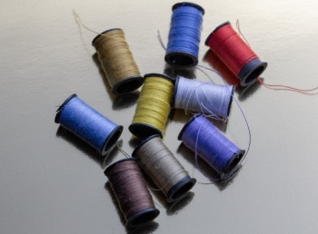

シューズキットの魅力

ファーストシューズ
手作りのファーストシューズだから、赤ちゃんが大きくなっても大切に残しておきたくなる、宝物になるでしょう。

ファミリーで楽しむ
TGSのファーストシューズ、シューズキットは家族で作って履くことのできる、手作り靴のラインナップです。

プレゼント
TGSのシューズキットには、さまざまなプレゼントのカタチがあります。赤ちゃんへ想いを込めてのプレゼントを。